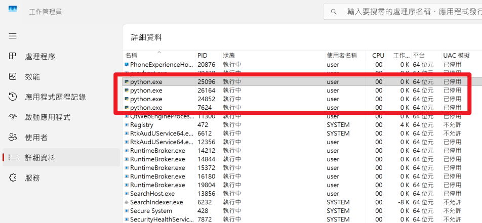

常見問題解決方案與系統效能調校
python --versionpip install -r requirements.txt -i https://pypi.tuna.tsinghua.edu.cn/simplePORT=5002http:// 而非 https://正常現象！需要下載 Sentence Transformers 模型（約 470MB）
# 預先下載模型
from sentence_transformers import SentenceTransformer
model = SentenceTransformer('paraphrase-multilingual-MiniLM-L12-v2')RAG_SIMILARITY_THRESHOLD（例如 0.5）data/vector_store/ 重建資料庫ENABLE_RAG=false